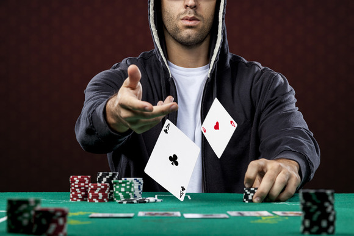
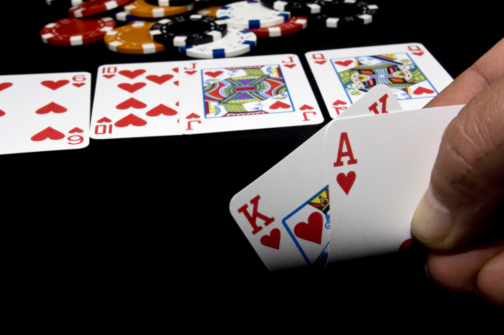

Introduction to Unlimited Taxas Holdem


As any other kind of poker unlimited holdem looks like a card game. But to tell you quite frankly that is not so.
Really unlimited holdem is a game of bets, based on little information where cards are used to create a situation for bets. Players announce “bet” and “call” considering that in the end their own hands (which they can see) will turn out better than opponents’ hands (which they cannot see).
The basics of Texas Holdem
The object. like all gambling, the objective is to win money. With poker, you're trying to win the other players' money, not the casino's money. The casino makes its money by taking a rake, which is a small percentage of the money the players bet. Betting is done with standard casino-style chips.
The play. Unlike most casino games where you bet, get your cards, and then it's over, with Texas Holdem you get some cards, make a bet, get some more cards, bet again if you like, and continue this process a few more times. You can bail at any point, which is called folding. This saves you from having to keep kicking money in, but it means you forfeit any money you've already bet since you're no longer in the game.
If everyone else folds, the last person standing wins. If there's more than one person still in the game at the end, then whoever has the best poker hand wins. (More on that in a minute.) What they win is the pot, which is all the money that all the players have bet that round—minus a rake (typically 5%), which is the commission the casino takes for hosting the game.
Poker Hands Ranking
A poker hand consists of five cards. Here are how the hands are ranked, from worst to best. Note that it doesn't matter what order the cards are in. As long as you could rearrange them to be in order (in your head), then it's a winning hand.
| Name of Hand |
Examples |
| Royal Flush |
10♦ J♦ Q♦ K♦ A♦ |
| Straight Flush |
7♦ 8♦ 9♦ 10♦ J♦ |
| Four of a Kind |
3♦ 3♠ J♦ 3♣ 3♥ |
| Full House |
E9♣ 9♥ 4♣ 4♥ 4♦ |
| Flush |
9♣ Q♣ 10♣ 4♣ 6♣ |
| Straight |
6♣ 7♥ 8♣ 9♦ 10♠ |
| Three of a Kind |
5♣ 5♥ 5♠ 9♦ 8♠ |
| Two Pair |
4♣ 4♥ 7♣ 7♦ Q♠ |
| Pair |
9♣ 9♥ 5♣ 4♦ 3♠ |
- High Card. Absent any better hand listed below, whoever has the highest card wins. The highest cards, from lowest to highest, is Jack, Queen, King, Ace, which we abbreviate J, Q, K, A. The hand [K 7 5 4 3] beats the hand [Q 7 5 4 3] because king beats queen. If two players have the same high card then the second-highest card wins. So [K J 9 6 5] beats [K 10 9 6 5] because jack beats ten. If two players both have the same high card and second-highest card then you look at the third-highest card, and so on.
- Pair. A pair is a hand with two cards of the same rank, like [9 9 5 4 3]. A pair beats a high card even if the rank of the pair is lower. For example, [2 2 9 5 4] beats [A K Q J 9]. All those high cards are helpless against a pair of twos. If two players have a pair then the highest pair wins. If two players have the same pair then you look at the highest card outside the pair to see who wins.
- Two Pair. A hand like [4 4 7 7 Q]. Same disclaimers for breaking ties as for regular pairs.
- Three of a Kind. This is just what it sounds like, three cards of the same rank, like [5 5 5 9 8]. As with pairs, with multiple players have three of a kind then the highest one wins, and high cards break ties.
- Straight. A straight is a hand with consecutive ranks, like [6 7 8 9 10]. An ace can also count as 1 to complete a straight where the other cards are 2, 3, 4, and 5, or as a high card to complete a straight where the other cards are 10, J, Q, K. But it can't count as both a low and a high card, e.g., Q K A 2 3.
- Flush. All the cards are the same suit, like 9♣ Q♣ 10♣ 4♣ 6♣.
- Full House. A pair and a three of a kind, like 9♣ 9♥ 4♣ 4♥ 4♦.
- Four of a Kind. Four of the same rank, like 3♦ 3♠ J♦ 3♣ 3♥.
- Straight flush. A hand that's both a straight and a flush, like 7♦ 8♦ 9♦ 10♦ J♦.
- Royal flush. A straight flush composed of the highest cards, such as 10♦ J♣ Q♦ K♦ A♦. But of course they don't all have to be in order. Q♦ 10♦ A♦ J♣ K♦ is still a royal flush. The Royal Flush is the jackpot in video poker, and comes around about once out of every 40,000 or so hands -- or a week and a half of full-time play. (Hey, it could be worse: The jackpot on a typical slot machine only hits about one out of every 262,144 spins.)
The Play
At long last, let's see how a round actually works.
- Posting the Blinds. Two players each make a mandatory small bet before any cards are dealt. This ensures that there's something for everyone to play for if no one decides to bet after that. This responsibility rotates around the table from round to round so that everybody shares the burden of posting the blinds throughout the game.
- The Deal. Each player gets two cards, face-down. These are called the hole cards. Players place their bets, or fold (bail out).
- The Flop. Three community cards are dealt face up to the center of the table. Each player can use any or all of these cards along with his/her hole cards to make the best five-card hand. This is done in your head; nobody touches the community cards. The players bet again, or fold.
- The Turn. (aka Fourth Street). A fourth community card is dealt. Hilarity, and more betting, ensues.
- The River. The fifth and final community card is dealt. Followed by the customary betting.
- The Showdown. Anyone still in the game (i.e., anyone who hasn't folded) puts their cards down face-up so all the players can see who won. The winner takes the pot, all the money that was bet during that round.